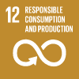
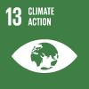
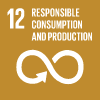
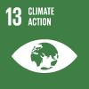

SDSU-UABC Sustainable Development Goals Tracking Dashboard: Strengthening Diversity and Deliberation and Climate Adaptation Planning
Data gaps and time lags in official statistics require urgent investments in statistical capacity and increased coordination between governments, academia, research community, and the private sector, and on leveraging the wealth of real-time data available from non-traditional sources. This multi-partner project aims to develop a United Nations Sustainable Development Goals Tracking Dashboard to monitor, track, and forecast cities’ social, environmental, and economic indicators to localize the SDGs in southern California and the Baja California Mexico region. The Universidad Autónoma de Baja California (Tijuana, Mexico) and the Metabolism of Cities Living Lab at San Diego State University (San Diego, California; USA) have partnered together to mobilize scientific and technological expertise to promote remote practical solutions for sustainable development and under-representative communities in southern California and the Baja California Mexico region, including the implementation of the Sustainable Development Goals (SDGs) and the Paris Climate Agreement. Our international team's mission is to create knowledge, share knowledge, apply knowledge, and foster a community while including All members of society through the use of technology. Through the development of a city profile Dashboard for San Diego County, Imperial County (USA), Tijuana and Mexicali (Mexico) called the “SDSU Sustainable Development Goals Tracking Dashboard” (see project Dashboard Video here) to track, monitor, visualize, and forecast social, environmental, and economic data.
The Dashboard contains data (SDG 6: Clean water and sanitation; SDG 7: Affordable and clean energy; SDG 9: Industry, innovation, and infrastructure; SDG 11: Sustainable cities and communities; and SDG 12: Responsible consumption and production) on changes over time (past, today, future) in SDG indicators, the future of the SDGs amidst Covid-19, as well as calculations for trajectories until 2030 (rankings, interactive map, city profiles, data explorer, key messages, and downloads). The Dashboard remains useful for understanding goal-by-goal progress across cities and regions since the adoption of the SDGs in 2015 (cities’ current performance and trends in relation to the SDGs). The SDG data can help cities understand pre-crisis vulnerabilities and challenges, which partly explain why so many cities were ill-prepared to respond to Covid-19. The SDG dashboard can support such diagnostics in cities. Over the longer term, the impacts of climate change might dwarf the dislocations caused by Covid-19, so cities need to understand where they stand in terms of decarbonizing energy systems; making their use of land and oceans sustainable; and developing low-carbon, resilient cities. The SDG dashboard provides a tool for such diagnoses. The SDG Dashboard underscores the urgent need for investments in more timely and comprehensive SDG data. Good data and clear metrics are critical for each city to take stock of where it stands on the SDGs, devise pathways for achieving the goals, and track progress. Disseminate best practices rapidly, strengthen financing mechanisms for cities, address hotspot areas in need, and ensure social protection (vulnerable areas) with no access to resources and services.
 


